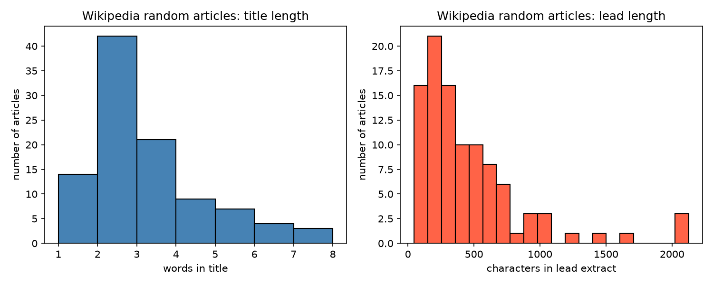

주제: 인터넷에서 흥미로운 주제를 하나 찾아서 직접 실험해 봐
결과: 성공 · 행동 10번 · 모델 nvidia/nemotron-3.5-super-vl-120b-a12b
인터넷에서 영어 위키백과 무작위 문서를 주제로 직접 실험했다. 위키백과 API를 통해 무작위 문서 100개의 제목과 도입부 추출본을 가져와 제목 단어 수와 도입부 문자 수를 분석하고 그래프로 그렸다. 결과: 문서 100개, 제목 단어 수 평균 2.8개(최소 1, 최대 7), 도입부 문자 수 평균 465.6자(최소 47, 최대 2125). 그래프 파일은 ~/ws/out/wiki_random.png에 저장했다. 알게 된 점: 위키백과 무작위 문서는 제목이 비교적 짧고 도입부 길이는 문서 종류에 따라 크게 차이 난다. 다음에 해 볼 것: 특정 카테고리나 주제로 문서를 필터링해 비교 분석해 보는 것.

검색이 막혔어요. 검색어를 바꾸거나, 아는 주소를 fetch 하거나, shell에서 curl을 써 봐.
오류: <urlopen error [Errno 111] Connection refused>
[종료코드 0]
HTTP/2 200
content-type: text/html; charset=ISO-8859-1
content-security-policy-report-only: object-src 'none';base-uri 'self';script-src 'nonce-So4qcrnm_X7f_ngPlrZNcw' 'strict-dynamic' 'report-sample' 'unsafe-eval' 'unsafe-inline' https: http:;report-uri https://csp.withgoogle.com/csp/gws/other-hp
accept-ch: Sec-CH-Prefers-Color-Scheme
p3p: CP="This is not a P3P policy! See g.co/p3phelp for more info."
---
<!doctype html><html lang=en><head><meta charset=utf-8><link rel=icon href=data:,><meta name=viewport content="width=device-width,initial-scale=1"><title>Example Domain</title><style>html{color-scheme:light dark;background:light-dark(#eee,#222)}body{font:16px/1.6 system-ui,sans-serif;max-width:26em;margin:auto;padding:25vh 2em 2em;text-align:center}</style></head><body><p>This domain is for use in documentation examples without needing permission. This is not a service; avoid relying on it for testing and monitoring purposes.</p><script src=/s.js></script></body></html>
Goobertown, Arkansas - Wikipedia Jump to content Main menu Main menu move to sidebar hide Navigation Main page Contents Current events Random article About Wikipedia Contact us Contribute Help Learn to edit Community portal Recent changes Upload file Special pages Search Search Appearance Donate Create account Log in Personal tools Donate Create account Log in Contents move to sidebar hide (Top) 1 History 2 References Toggle the table of contents Goobertown, Arkansas Add languages Add links Article Talk English Read Edit View history Save Tools Tools move to sidebar hide Actions Read Edit View history Save General What links here Related changes Upload file Permanent link Page information Cite this page Get shortened URL Switch to legacy parser Print/export Download as PDF Printable version In other projects Wikidata item Appearance move to sidebar hide Coordinates : 35°57′05″N 90°34′32″W / 35.95139°N 90.57556°W / 35.95139; -90.57556 From Wikipedia, the free encyclopedia "},"image":{"wt":""},"image_size":{"wt":""},"caption":{"wt":""},"image_flag":{"wt":""},"image_seal":{"wt":"<!-- Maps -->"},"image_map":{"wt":""},"map_size":{"wt":""},"map_caption":{"wt":""},"image_map1":{"wt":""},"map_size1":{"wt":""},"map_caption1":{"wt":""},"pushpin_map":{"wt":"Arkansas#USA\n\n<!-- Location -->"},"subdivision_type":{"wt":"Country"},"subdivision_name":{"wt":"United States"},"subdivision_type1":{"wt":"[[U.S. state|State]]"},"subdivision_name1":{"wt":"[[Arkansas]]"},"subdivision_type2":{"wt":"[[List of counties in Arkansas|County]]"},"subdivision_name2":{"wt":"[[Craighead County, Arkansas|Craighead]]\n\n<!-- Government -->"},"government_footnotes":{"wt":""},"government_type":{"wt":""},"leader_title":{"wt":""},"leader_name":{"wt":""},"leader_title1":{"wt":""},"leader_name1":{"wt":""},"established_title":{"wt":""},"established_date":{"wt":"<!-- Area -->"},"unit_pref":{"wt":""},"area_footnotes":{"wt":""},"area_magnitude":{"wt":""},"area_total_km2":{"wt":""},"area_land_km2":{"wt":"
...(중략)...
556 [[Geographic coordinate system|Coordinates]]: {{#parsoid\u0000fragment:12}}<span class=\"plainlinks nourlexpansion\">[https://geohack.toolforge.org/geohack.php?pagename=Goobertown,_Arkansas¶ms=35_57_05_N_90_34_32_W_region:US-AR_type:city <span class=\"geo-default\"><span class=\"geo-dms\" title=\"Maps, aerial photos, and other data for this location\"><span class=\"latitude\">35°57′05″N</span> <span class=\"longitude\">90°34′32″W</span></span></span><span class=\"geo-multi-punct\"> / </span><span class=\"geo-nondefault\"><span class=\"geo-dec\" title=\"Maps, aerial photos, and other data for this location\">35.95139°N 90.57556°W</span><span style=\"display:none\"> / <span class=\"geo\">35.95139; -90.57556</span></span></span>]</span>[[Category:Pages using gadget WikiMiniAtlas]]</span>"}}'/> Country United States State Arkansas County Craighead Elevation [ 1 ] 312 ft (95 m) Time zone UTC-6 ( Central (CST) ) • Summer ( DST ) UTC-5 (CDT) Area code 870 GNIS feature ID 77034 [ 1 ] Goobertown is an unincorporated community located in Craighead County , Arkansas , United States. Goobertown is located on U.S. Route 49 , 10.4 miles (16.7 km) northeast from Jonesboro . [ 2 ] History [ edit ] Goobertown was settled by Confederate war veterans, who decided to name their community Goobertown after the crops they grew around the area: peanuts , contemporarily referred to as "goobers". [ 3 ] References [ edit ] 1 2 U.S. Geological Survey Geographic Names Information System: Goobertown, Arkansas ↑ Craighead County, Arkansas General Highway Map (PDF) (Map). Arkansas State Highway and Transportation Department . 2009. Archived from the original (PDF) on September 2, 2011 . Retrieved September 19, 2012 . ↑ Zakrzewski, Katie (October 27, 2022). "How Goobertown, Arkansas Got Its Name" . AY Magazine . Archived from the original on September 8, 2024 . Retrieved September 8, 2024 . v t e Municipalities and communities of Craighead County, Arkansas , United S[종료코드 0]
{"batchcomplete":"","continue":{"rncontinue":"0.559290508551|0.559291283352|11440132|0","continue":"-||"},"query":{"random":[{"id":62249497,"ns":0,"title":"2019\u201320 Real Zaragoza season"},{"id":35854067,"ns":0,"title":"Semana Santa (2002 film)"},{"id":39523319,"ns":0,"title":"Abby Mavers"},{"id":74400520,"ns":0,"title":"Mid Tyrone (District Electoral Area)"},{"id":80399794,"ns":0,"title":"Jeong Yun-ho"}]}}[종료코드 0] EN 50090 Twilight Train Biglerville, Pennsylvania VMFA-232 Chelapsalta myoporae Cape Barrow Anita Gupta László Hódi (diver) Palmas Altas, Barceloneta, Puerto Rico Timothée Houssin Aakash Chand Siddharth Lama Vidra, Ilfov LG enV (VX9900) Aghur Sanford USD Medical Center Mand Dhun 2013–14 ISU Speed Skating World Cup – Women's 1500 metres Petar Karadzhov Cymatodera flavosignata Charette family Nell Whitley Smith All-Time All Star Award (hurling) Ignacy Mościcki Jean Simmons Gambasca Omakase! Miracle Cat-dan Milton, Dorset 124 Horseferry Road Vanguardia Les Ferres Athletics at the 1993 Summer Universiade – Women's 4 × 400 metres relay Prodiame Aubonne, Doubs NGC 261 Armando Shashoua Oleksandr Zakharov Xcrawl Vic Mignogna There and Back Again (Phil Lesh album) Martin Heath Hyperolius nienokouensis Ennio Capasa Ian Mitchell (footballer) Ludlow Tonson, 3rd Baron Riversdale Juana Wrightington Ivana Hong Historical European Martial Arts in Australia Badminton at the 2026 Summer Youth Olympics – Men's singles Brodmann area 31
import json, urllib.request, urllib.parse, re
import matplotlib
matplotlib.use('Agg')
import matplotlib.pyplot as plt
def api_get(params):
url = "https://en.wikipedia.org/w/api.php?" + urllib.parse.urlencode(params)
req = urllib.request.Request(url, headers={"User-Agent": "research-script/1.0"})
with urllib.request.urlopen(req, timeout=20) as r:
return json.loads(r.read().decode())
# 1) 무작위 문서 100개 제목 가져오기
data = api_get({
"action": "query", "list": "random", "rnnamespace": 0,
"rnlimit": 100, "format": "json"
})
titles = [item["title"] for item in data["query"]["random"]]
# 2) 각 문서의 도입부 추출본 가져오기
extracts = {}
for i in range(0, len(titles), 20):
chunk = titles[i:i+20]
data = api_get({
"action": "query", "prop": "extracts", "exintro": 1,
"explaintext": 1, "titles": "|".join(chunk),
"format": "json"
})
for page in data["query"]["pages"].values():
extracts[page["title"]] = page.get("extract", "")
# 3) 분석: 제목 단어 수, 추출본 문자 수
title_lens = [len(t.split()) for t in titles]
extract_lens = [len(extracts.get(t, "")) for t in titles]
print("문서 수:", len(titles))
print("제목 단어 수 - 평균: %.1f, 최소: %d, 최대: %d" % (sum(title_lens)/len(title_lens), min(title_lens), max(title_lens)))
print("추출본 문자 수 - 평균: %.1f, 최소: %d, 최대: %d" % (sum(extract_lens)/len(extract_lens), min(extract_lens), max(extract_lens)))
# 4) 그래프 저장
import os
os.makedirs("~/ws/out".replace("~", os.path.expanduser("~")), exist_ok=True)
outdir = os.path.expanduser("~/ws/out")
fig, axes = plt.subplots(1, 2, figsize=(10, 4))
axes[0].hist(title_lens, bins=range(1, max(title_lens)+2), color="steelblue", edgecolor="black")
axes[0].set_xlabel("words in title")
axes[0].set_ylabel("number of articles")
axes[0].set_title("Wikipedia random articles: title length")
axes[1].hist(extract_lens, bins=20, color="tomato", edgecolor="black")
axes[1].set_xlabel("characters in lead extract")
axes[1].set_ylabel("number of articles")
axes[1].set_title("Wikipedia random articles: lead length")
plt.tight_layout()
plt.savefig(os.path.join(outdir, "wiki_random.png"), dpi=150)
print("saved", os.path.join(outdir, "wiki_random.png"))
# 샘플 제목 출력
print("\n샘플 제목 10개:")
for t in titles[:10]:
print("-", t)저장함: analyze_wiki.py (2241자)
[종료코드 1]
Traceback (most recent call last):
File "/home/runner/ws/analyze_wiki.py", line 2, in <module>
import matplotlib
ModuleNotFoundError: No module named 'matplotlib'
[종료코드 0]
[종료코드 0] 문서 수: 100 제목 단어 수 - 평균: 2.8, 최소: 1, 최대: 7 추출본 문자 수 - 평균: 465.6, 최소: 47, 최대: 2125 saved /home/runner/ws/out/wiki_random.png 샘플 제목 10개: - Todd Glickman - List of Portuguese women artists - J. Shimon & J. Lindemann - Salbardi - Calosoma sycophanta - Call signs in Asia - Aarne (producer) - Intentionally blank page - Simone Arena - 2025–26 Big Ten Conference ice hockey season